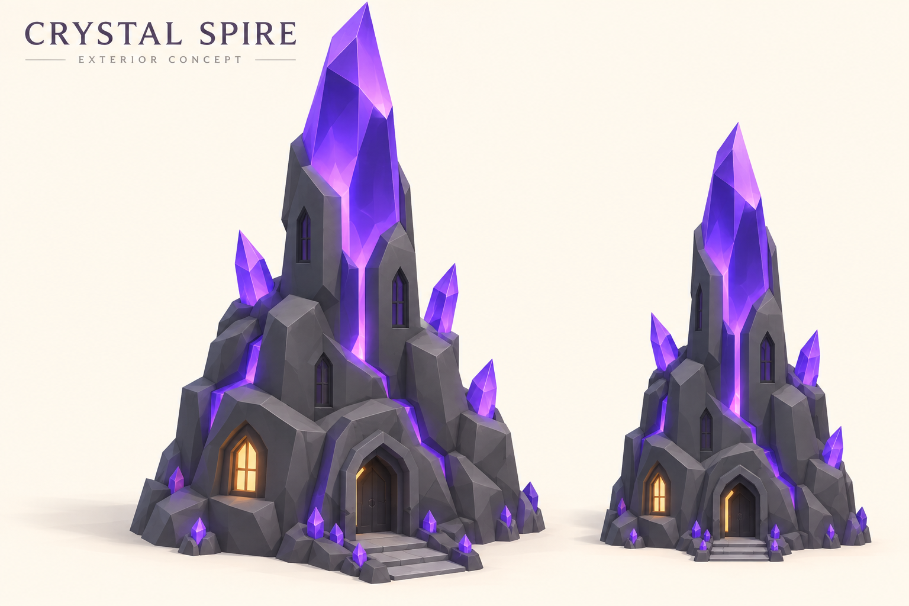
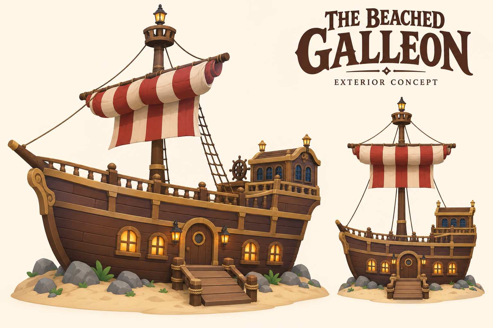

ROB A PIGGY BANK · B1 + B3 · SEPTEMBER 17
Make the next house
worth saving for.
Two new exterior concept sheets and a refreshed house catalogue prototype. Interiors are deferred beyond MVP. These concepts are ready for selection; they are not completed Roblox models.
Open the interactive house catalogue →
CRYSTAL · 25M · LEGENDARY
Crystal Spire
Proposed 24 × 24 × 45 studsJagged tower silhouetteSlow violet accent pulse
A fractured stone base with a tall violet crystal rising through it. A warm ground-level window makes the entrance easy to spot.

Model direction: retain the dominant spire and framed doorway; reduce the tiny crystal rubble and surface complexity. Keep the peak deep violet in Roblox lighting. The image's silhouette is a reference, not a measurement.
GALLEON · 150M · LEGENDARY
The Beached Galleon
Proposed 42 × 24 × 50 studsBroadside entranceAmber masthead pulse
A grounded ship becomes a home, with a fixed gangplank, half-furled red-and-cream sail and a tall lookout.

Model direction: use flat timber colours, broad hull courses and fewer ornamental posts. The generated wood grain and cloth shading are not texture requirements. Keep upper windows unlit; include no cannons, skulls or weapons.